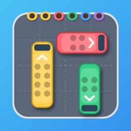

Busy Bays
Bus jam puzzle
Clear the lot. Fill the buses. Don't jam the bays.
Busy Bays is a traffic puzzle for iPhone and iPad. Tap a bus with a clear road and it drives out of the packed lot to a loading bay, where riders of its color climb aboard. Full buses leave and free their bay. Pick the wrong buses and the bays fill up with nobody to board them.
Hundreds of levels, every one checked to be winnable. Hard levels and bosses are marked before you start, and a breather always follows a boss. Five kinds of twist keep it fresh: mystery buses that hide their color, lots full of long coaches, tight squeezes with only four bays, and more. Three boosters for when you're stuck, and a daily reward for coming back.
For iPhone and iPad. Free to play, with optional purchases and ads.